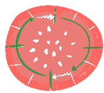
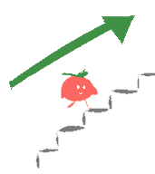
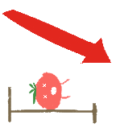
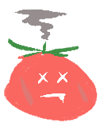
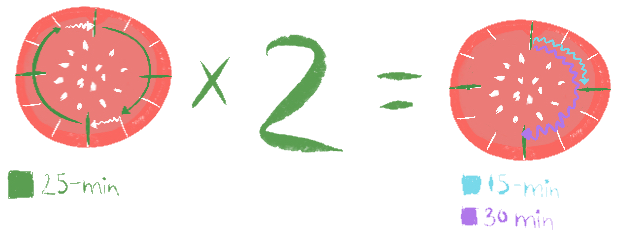

25:00
Task List
What is Pomodoro?
Pomodoro is a technique that incorporate time management as its method, which is developed by Francesco Cirillo in the late 1980s.
The technique uses a timer to break down work into intervals, traditionally 25 minutes in length, separated by short breaks. These intervals are known as "pomodoros".
The goal is to use the time intervals to increase productivity and reduce procrastination.
 The Pomodoro Technique can help you stay focused and avoid burnout by breaking your work into manageable chunks and giving you regular breaks to rest and recharge. It can also help you track your time and see how much progress you're making on a given task.
Video Illustration
Extra Instructions
Choose a task to work on.
Set the Pomodoro timer to 25 minutes.
Click the start time button and work on the task until the timer goes off.
Take a short break (typically 5 minutes).
Every four "pomodoros", take a longer break (typically 15-30 minutes).
